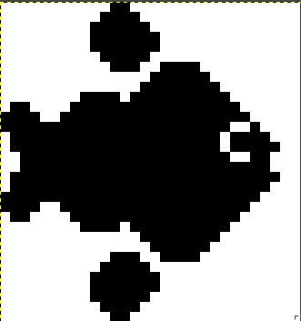

CircuitPython Documentation
About the board
Link
- Raspberry Pi Pico
- Trinket M0
- Seeed Studio XIAO RP2040 (currently use)
CircuitPython Version
- All boards use CircuitPython 8.2.9.
Hardware setup
-
Raspberry Pi Pico
- Pin 1 (TX) -> R557 (RX)
- Pin 2 (RX) -> R557 (TX)
- Pin 37 (3.3V) -> R557 (3.3V)
- Pin GND -> R557 (GND)
-
Trinket M0
- Pin D4 (TX) -> R557 (RX)
- Pin D3 (RX) -> R557 (TX)
- Pin 3V (3.3V) -> R557 (3.3V)
- Pin 38 (GND) -> R557 (GND)
-
Seeed Studio XIAO RP2040
- Pin D6 (TX) -> R557 (RX)
- Pin D7 (RX) -> R557 (TX)
- Pin 3V3 (3.3V) -> R557 (3.3V)
- Pin GND -> R557 (GND)
- Pin D5 (SCL) -> 0.91 inch OLED I2C (SCL) (Optional)
- Pin D4 (SDA) -> 0.91 inch OLED I2C (SDA) (Optional)
- Pin 5V -> 0.91 inch OLED I2C (VCC) (Optional)
- Pin GND -> 0.91 inch OLED I2C (GND) (Optional)
Note: The display is completely optional and the code would still work fine if there is no display.
Code Acknowledgement
code.py and custom_finger_lib.py are referenced from Adafruit CircuitPython Fingerprint github page (Python and C++), more specifically examples/fingerprint_r503.py and examples/fingerprint_template_file_compare.py.
adafruit_fingerprint_reduced.py is a copy from adafruit_fingerprint.py with unused functions removed. adafruit_fingerprint.cpp was also useful for listing all the possible error codes the sensor can return when using the functions in the library.
The display uses adafruit_displayio_ssd1306.py driver.
Credit to the authors of these library codes.
Python Code
Set up
R557 fingerprint sensor
- Initialize UART object with TX, RX pins and baudrate=115200*
-
Connect to sensor using UART object
- If it is unsucessful, it will try baudrate 9600*N with N from 1 to 12.
- If it is successful, it will set the desired security level and data package size
-
Create finger object from
adafruit_fingerprint_reduced.py -
If the code cannot establish connection with the sensor even after trying different baudrate then the code will simply end later.
``` Code done running.
Press any key to enter the REPL. Use CTRL-D to reload.```
-
Go to display set up
*Each board has a different name for TX and RX pins. We can check the pin names by going into REPL and do
>>>import board
>>>dir(board)
0.91 inch OLED (Optional)
- Create I2C object using board.I2C()*
- Initialize display bus and display SSD1306 displayio driver
- If no display is available, print error and set splash to None
- Create displayio Group called splash and set it as root group
- Display white background
- Display company name and logo for 1s
- Go to main loop
*Some board might not support this function. An alternative is busio.I2C() which does the same thing but requires SDA and SCL pin. Refer to the section above and the datasheet to check the I2C pin name. This section might throw an error if there is no pull up resistor for the board.
Note: For a better guide on using the display in circuitpython, use this link from adafruit
Calling Functions
Dart code can call functions by sending
"[Command]" + " "(Optional) + "[Argument]"(Optional) + "\n" + "\r"
when prompted with ">" from the Python code. The code python receive this by calling input() with usb_cdc imported.
"\n" signals that this is the end of the user input for input(). "\r" signals this is the end of the data so input() can start reading from the serial port.
Important: usb_cdc allows the python code to treat the usb connection as a console/terminal, so print() and input() will automatically work on the serial port without the need for any specialise serial read/write functions.
Format: >[Command] [Argument] (Only when dart code is used as a command line interface)
Type:
- Command: String from '1' to '6'
- Argument (optional): String from '1' to '120'
code.py API
Command '1' - Enroll fingerprint in slot "Argument"
Input: >1 [slot number] or send "1 [slot number]\n\r" through serial
Output:
>1 1 #Enroll finger (command 1) in slot 1
1 1
FINGERREQUEST #Request User to press finger on sensor
FINGERHOLD #Request User to hold finger on sensor
OKIMAGE #Image taken successfully
TEMPLATING #Converting image to template
OKTEMPLATE #Image converted to template successfully
REMOVEFINGER #Request User to remove finger off sensor
FINGERREQUEST #Request User to press finger on sensor
FINGERHOLD #Request User to hold finger on sensor
OKIMAGE #Image taken successfully
TEMPLATING #Converting image to template
OKTEMPLATE #Image converted to template successfully
CREATEMODEL #Create Model from template for storage
OKMODEL #Create Model successfully
STOREMODEL #Storing model on sensor flash memory
OKSTORAGE #Model stored successfully
READTEMPLATE 1 2 #Display all models stored on sensor by listing its slot. Currently in slot 1 and slot 2.
> #Command/Input request
Possible Errors:
- 1 (PACKETRIEVEERR)
- 2 (NOFINGER)
- 3 (IMAGEFAIL)
- 6 (IMAGEMESS)
- 7 (FEATUREFAIL)
- 10 (ENROLLMISMATCH)
- 11 (BADLOCATION)
- 21 (INVALIDIMAGE)
- 24 (FLASHERR)
- 87 (NUMARGUMENT)
- 88 (LOCATIONVAL)
- 89 (WRONGCOMMAND)
- CANCEL
Command '2' - Identify fingerprint
Input: >2 or send "2\n\r" through serial
Output:
READTEMPLATE 1 2
>2 #Identify finger
FINGERREQUEST #Request User to press finger on sensor
FINGERHOLD #Request User to hold finger on sensor
OKIMAGE #Image taken successfully
TEMPLATING #Converting image to template
OKTEMPLATE #Image converted to template successfully
SEARCHING #Searching for Model that match template in sensor's flash memory
OKSEARCH 1 100 #Model found in slot 1 with confidence 100
READTEMPLATE 1 2
>
Possible Errors:
- 1 (PACKETRIEVEERR)
- 2 (NOFINGER)
- 3 (IMAGEFAIL)
- 6 (IMAGEMESS)
- 7 (FEATUREFAIL)
- 9 (NOTFOUND)
- 21 (INVALIDIMAGE)
- 89 (WRONGCOMMAND)
- CANCEL
Command '3' - Delete fingerprint
Input: >3 [slot number] or send "3 [slot number]\n\r" through serial
Output:
READTEMPLATE 1 2
>3 1 #Delete model in slot 1
OKDELETE #Model deleted successfully
READTEMPLATE 2
>
Possible Errors:
- 1 (PACKETRIEVEERR)
- 11 (BADLOCATION)
- 24 (FLASHERR)
- 87 (NUMARGUMENT)
- 88 (LOCATIONVAL)
- 89 (WRONGCOMMAND)
Command '4' - Download template to computer
Input: >4 or send "4\n\r" through serial
Output:
>4
4 #Download template into Dart code
FINGERREQUEST #Same steps as enroll. Default to slot 1.
FINGERHOLD
OKIMAGE
TEMPLATING
OKTEMPLATE
REMOVEFINGER
FINGERREQUEST
FINGERHOLD
OKIMAGE
TEMPLATING
OKTEMPLATE
CREATEMODEL
OKMODEL
STOREMODEL
OKSTORAGE
TEMPDOWNLOAD #Start downloading template of enrolled fingerprint
OKDOWNLOAD 2048 #Template downloaded successfully sensor. Length: 2048 bytes
b'46704c...ffff1f29d8ff40' #Hex data printed to serial port as String
READTEMPLATE 1 2
>
Possible Error:
- Same as Command 1 as it uses command 1 first
- 90 (DOWNLOADFAIL)
- CANCEL
Note: In the current version of the Dart code, the template is stored in a variable called templateBuffer with Uint8List type which has a size of 4096 (Double the size of the template as the hex code is represented in String format)
Command '5' - Upload template from computer and verify
Input: >5 or send "5\n\r" through serial
Output:
>5 #Upload template to sensor to verify
5
46704c...ffff1f29d8ff40 #Data sent by the computer from Dart's templateBuffer
FINGERREQUEST #Request User to press finger on sensor
FINGERHOLD #Request User to hold finger on sensor
OKIMAGE #Image taken successfully
TEMPLATING #Converting image to template
OKTEMPLATE #Image converted to template successfully
OKMATCH #Template match with uploaded template
READTEMPLATE 1 2
>
Possible Errors:
- 1 (PACKETRIEVEERR)
- 2 (NOFINGER)
- 3 (IMAGEFAIL)
- 6 (IMAGEMESS)
- 7 (FEATUREFAIL)
- 21 (INVALIDIMAGE)
- 89 (WRONGCOMMAND)
- 91 (UPLOADFAIL)
- 92 (MATCHFAIL)
- CANCEL
Command '6' - Clear all models in sensor's flash memory
Input: >6 or send "6\n\r" through serial
Output:
READTEMPLATE 1 2
>6 #Delete all models in sensor
6
OKDELETE #Deleted successfully
READTEMPLATE 0 #No template in sensor
>
Note: 0 does not mean there exist a model in slot 0. Slot 0 does not exist and is not a valid slot.
Possible Errors:
- 1 (PACKETRIEVEERR)
- 11 (BADLOCATION)
- 24 (FLASHERR)
- 89 (WRONGCOMMAND)
Error Printing
Format: ERROR [error number]
| Name | Hex Code (Decimal) | Description |
|---|---|---|
| PACKETRIEVEERR | 0x01 (1) | Trouble communicating with sensor |
| NOFINGER | 0x02 (2) | Finger is not pressed on sensor when taking image |
| IMAGEFAIL | 0x03 (3) | Imaging error |
| IMAGEMESS | 0x06 (6) | Image is too messy. Cannot extract features |
| FEATUREFAIL | 0x07 (7) | Failed to identify fingerprint feature |
| NOTFOUND | 0x09 (9) | Fingerprint model not in sensor's library |
| ENROLLMISMATCH | 0x0A (10) | Fingerprint is not the same when taken twice. Cannot generate model |
| BADLOCATION | 0x0B (11) | Invalid location for operation |
| INVALIDIMAGE | 0x15 (21) | Image taken is not a fingerprint. Failed to extract features |
| FLASHERR | 0x18 (24) | Model could not be written to flash memory |
| SETPARAMFAIL | 0x56 (86) | Cannot change sensor's parameter settings: baud rate, security level, data package size |
| NUMARGUMENT | 0x57 (87) | Wrong number of arguments |
| LOCATIONVAL | 0x58 (88) | Location/slot number argument is invalid. Range: 1-120 |
| WRONGCOMMAND | 0x59 (89) | Command does not exist |
| DOWNLOADFAIL | 0x5A (90) | Cannot download model from sensor |
| UPLOADFAIL | 0x5B (91) | Fail to upload template to sensor |
| MATCHFAIL | 0x5C (92) | Fingerprint does not match with uploaded template |
| BADUPLOAD | 0x5D (93) | Template uploaded from dart has incorrect length |
| NONHEX | 0x5E (94) | Uploaded template from dart contains non hexidecimal character |
Status Printing
| Name | Description |
|---|---|
| FINGERREQUEST | Request finger to be placed on sensor |
| FINGERHOLD | Request finger to be held on sensor |
| TEMPLATING | Converting image to template |
| SEARCHING | Searching for matching model in sensor's library/flash |
| REMOVEFINGER | Request finger to be removed off the sensor |
| CREATEMODEL | Creating model from template to be stored |
| STOREMODEL | Storing model in sensor's library |
| READTEMPLATE | Reading all the model/template stored in the sensor |
| PARAMDETAIL | Printing current configuration for sensor (baud rate, security level, data package size) |
| SENSORINIT | Establishing connection with sensor and setting sensor's configuration |
| TEMPDOWNLOAD | Downloading template from sensor |
| TEMPUPLOAD | Uploading template from sensor |
| DISPLAYINIT | Connecting with display using I2C. |
Success Code Printing
| Name | Description |
|---|---|
| OKIMAGE | Image taken successfully |
| OKTEMPLATE | Image converted to template successfully |
| OKMODEL | Create model is successful |
| OKSTORAGE | Model stored successfully in sensor's library |
| OKDELETE | Model deleted successfully |
| OKSEARCH | Template is identified. Location and confidence level is printed in that order |
| OKPARAMSET | Parameter set successfully for sensor |
| OKDOWNLOAD | Download template from sensor successfully. Number of byte is also printed |
| OKMATCH | Uploaded template matches with fingerprint. |
| OKUPLOAD | Template uploaded to sensor successfully |
Displaying Text & Creating Bitmap Image (For external display)
As it might be necessary to change the text or image being displayed, this section is created as a guide. Reference: text, bitmap image
Creating Bitmap image (Linux)
- Download GIMP
- Download image that needs to be converted to bitmap
- Open image in GIMP (top left corner: File -> Open)
- Crop the image to the desired size (Shift + C). Keep as little margin as possible as we are going to resize the image down smaller.
-
Use the bucket fill tool (Shift + B) to fill any transparent area with white. We will treat white as the 'transparent' color.
Image with transparent area Image with no transparent area -
Since our display is black and white, use the bucket tool again to fill the image with black. The color on step 5 and 6 can be swapped if you want to display the image as white instead.
Black and white image -
Go to the top bar: Image -> Mode -> Indexed. Click on 'Use black and white (1-bit) palette' and 'Convert'. This convert the image to black and white but the color mapping can be quite random hence we did step 5 and 6 to ensure there is no need for mapping.
- Resize the image to fit your display. Top bar: Image -> Scale Image. Select the width and height to match your display. In our case, our display is 128 x 32 hence we will resize it to 32 x 32.
- The width and height box might automatically change to match the current's image width:height ratio. You can further crop the image to get the ratio you want. Same for the X, Y resolution
-
For the X, Y resolution, use the display specification and do pixel/length or pixel/width and enter it in the box. Use the higher resolution for the image. In our case, it is 128 pixel/ 25 mm = 5.12 pixels/mm.
Scaled image -
For the quality, refer to this documentation. In our case, either Cubic or NoHalo works fine.
-
Use Paintbrush tool (P) and select the pixel size (1x1 pixel) on the right window to do any final adjustment.
Final image  -
Go to the top bar: Colors -> Map -> Rearrange Colormap. Drag the color white to the first position. Don't worry about the number as it will change when we click OK. The first position will be considered as the 'transparent' color in displayio.
- Finally, go to the top bar: File -> Export As. And change the file extension to .bmp. Ex: image_name.png -> image_name.bmp
Note: You can change step 5, 6 and 7 to match your display color specification.
Displaying Text and Bitmap Image
We made three functions to easily display text and image in custom_finger_lib.py. They only differ by the way they display text.
There is a assumption that the image is 32 x 32 (max) and the font is termialio.Font with scale = 2. Our layout is image on the left and text next to the image on the right. Of course, this can be changed in the library to fit your display. Examples are shown in the Introduction page
-
def display_text_and_logo(splash, text, logo_file)Input:
- splash: Displayio root group. displayio.Group() type
- text: A string that you want to display
- logo_file: file location of bitmap image. Ex: "\image.bmp". Can be None for not displaying image
Output:
- text_area: ScrollingLabel object that can be used to scroll the text if it exceeds the display length
Note: This will display text and logo indefinitely until another display function is called. If logo_file is None, the previous image won't be removed. Text can be scrolled using
``` while True: text_area.update() ``` -
def display_sequence_of_text(splash, text, logo_file, duration)Input:
- splash: Displayio root group
- text: Multiple strings seperated by a space. Ex: "Hello World!"
- logo_file: file location of bitmap image. Can be None for not displaying image
- duration: duration to display all strings
Output: None
Note: This will separate each string and display them with equal time slice. Ex: Hello -> World!. The text and logo will be removed after the duration.
-
def display_scroll_sequence_of_text(splash, text, logo_file, duration, speed)Input:
- splash: Displayio root group
- text: Usually a long string
- logo_file: file location of bitmap image. Can be None for not displaying image
- duration: duration to scroll the string. Can be 0 to scroll indefinitely
- speed: How fast the string is scrolled
Output:
- text_area: ScrollingLabel object that can be used to scroll the text
Note: This is used when the sensor is requesting fingerprint. The function is called and the output is put in a while loop to constantly display the message.
``` while True: if text_area is not None: # Check to see if there is a display text_area.update() ```